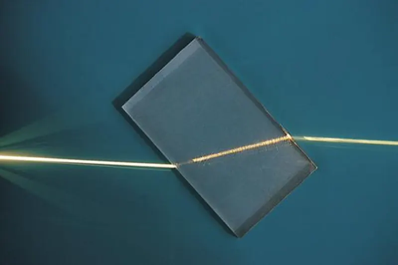
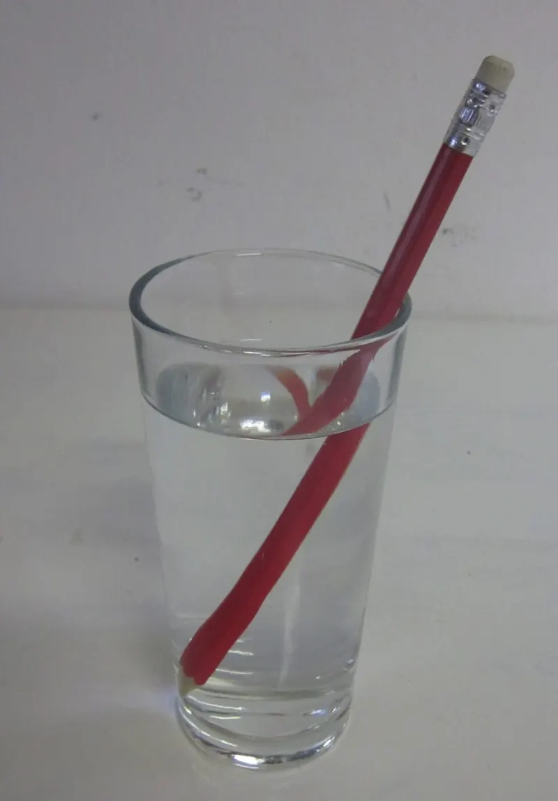

Cambridge Lower Secondary · Science 0893 · Stage 8 · Physics
Reflection and Refraction
The law of reflection, images in plane mirrors, and why light bends when it passes between air, water and glass — explained by the change in the speed of light.
British & IGCSE › Checkpoint 8 › Checkpoint 8 Science — Complete Course
- Describe what happens when light reflects from a flat (plane) surface such as a mirror, and use the law of reflection: the angle of incidence equals the angle of reflection. (8Ps.01)
- Describe refraction — the bending of light at the boundary between air and glass, or air and water — and explain it by the change in the speed of light. (8Ps.02)
- Thinking and Working Scientifically used on this page: using an analogy as a model (8TWSm.01, 8TWSm.02), taking accurate measurements with a protractor (8TWSc.04) and spotting anomalous results (8TWSa.02).
1. Key words
| Word / phrase | Meaning / use |
|---|---|
| ray | شعاع — a straight line with an arrow that shows the path and direction of light |
| plane mirror | مرآة مستوية — a flat, smooth mirror |
| incident ray | الشعاع الساقط — the ray travelling towards the surface |
| reflected ray | الشعاع المنعكس — the ray that bounces off the surface |
| normal | العمود المقام — an imaginary line drawn at 90° to the surface at the point where the ray hits it |
| angle of incidence (i) | زاوية السقوط — the angle between the incident ray and the normal |
| angle of reflection (r) | زاوية الانعكاس — the angle between the reflected ray and the normal |
| refraction | الانكسار — the change of direction of light when it passes from one material into another |
| medium (plural: media) | وسط — a material that light travels through, e.g. air, water, glass |
| boundary | الحد الفاصل — the surface where two materials meet |
| angle of refraction | زاوية الانكسار — the angle between the refracted ray and the normal |
| transparent | شفاف — lets light pass through so you can see clearly through it |
2. How light travels
Light travels in straight lines from a source (the Sun, a lamp) until it meets something. When light hits a surface, three things can happen: it can be reflected (bounce off), absorbed (taken in, which warms the surface), or transmitted (pass through, as with glass or water). Often more than one happens at once — a window lets most light through but you can still see a faint reflection in it.
We show the path of light with rays: straight lines drawn with a ruler, with an arrow showing which way the light is going. An arrow pointing the wrong way loses marks in Checkpoint-style questions.
3. Reflection at a plane mirror
To describe reflection we always draw the normal: a dashed line at 90° to the mirror, at the point where the ray hits it. Both angles are measured from the normal, never from the mirror.
- angle of incidence = angle of reflection (i = r)
- The incident ray, the reflected ray and the normal all lie in the same flat plane (the same flat sheet of paper).
- A ray that hits the mirror along the normal (i = 0°) is reflected straight back along the same line.
Measuring from the mirror — the classic trap. If a question tells you the angle between the ray and the mirror surface, subtract it from 90° to get the angle of incidence. For example, a ray at 30° to the mirror has i = 90° − 30° = 60°, so r = 60° too.
4. Smooth and rough surfaces
Every surface obeys the law of reflection. What changes is how flat the surface is.
| Regular (specular) reflection | Diffuse (scattered) reflection | |
|---|---|---|
| Surface | very smooth and flat: mirror, still water, polished metal | rough at a tiny scale: paper, wood, cloth, a wall |
| What happens to parallel rays | they stay parallel after reflection | they go off in many different directions |
| Do you see an image? | yes — a clear image (a reflection) | no image — you just see the surface itself |
| Does i = r? | yes | yes, at every tiny piece of surface — each piece has its own normal |
Diffuse reflection is why you can read this page from any angle: light from the page is scattered towards your eyes from wherever you sit.
5. The image in a plane mirror
When you look in a mirror, light from you reflects off the mirror into your eyes. Your brain assumes light travels in straight lines, so it traces the rays back behind the mirror and you "see" an image there.
| Property of the image in a plane mirror | Meaning |
|---|---|
| same size as the object | a 1.6 m tall person sees a 1.6 m tall image |
| same distance behind the mirror as the object is in front | stand 2 m from a mirror: the image is 2 m behind it, so it is 4 m from you |
| upright | not upside down |
| laterally inverted | left and right are swapped — this is why AMBULANCE is printed backwards on the front of ambulances |
| virtual | no light really reaches the place behind the mirror, so the image cannot be shown on a screen |
6. Using reflection: the periscope
A periscope lets you see over a wall or out of a submarine. It has two plane mirrors, parallel to each other and each at 45° to the tube. Light from the object hits the top mirror at an angle of incidence of 45°, so it is reflected at 45° — turned through 90° — straight down the tube. The bottom mirror turns it through 90° again, into your eye.
7. Refraction — light changes speed
Light travels at different speeds in different materials. It is fastest in a vacuum (and almost as fast in air), and slower in water and glass.
| Material | Approximate speed of light |
|---|---|
| air | 300 000 km/s |
| water | 225 000 km/s |
| glass | 200 000 km/s |
Refraction happens at the boundary between two transparent materials. When light crosses the boundary at an angle, the change of speed makes it change direction. The rule depends on whether the light slows down or speeds up:
| Light goes from… | Speed | Direction |
|---|---|---|
| air → glass, or air → water | slows down | bends towards the normal (angle of refraction smaller than angle of incidence) |
| glass → air, or water → air | speeds up | bends away from the normal (angle in air is bigger) |
| any boundary, along the normal (i = 0°) | still changes speed | does not change direction — it goes straight through |
In the diagram the angle of incidence is 50° and the angle of refraction inside the glass is about 31°. When the light leaves the opposite parallel side it bends back by the same amount, so the emergent ray is parallel to the incident ray — it has only been shifted sideways.

Some light is also reflected at every boundary. That is why you see a faint reflection in a shop window while you can also see through it.
8. Why does a change of speed cause bending? An analogy
An analogy is a model that compares something we cannot see with something familiar (8TWSm.01). Imagine a line of students marching side by side, arm in arm, across a road and onto a muddy field, where everyone must walk more slowly.
- If the line meets the mud at an angle, one end of the line reaches the mud first and slows down while the other end is still on the road, moving fast.
- The fast end catches up, so the whole line swings round and changes direction — towards the normal.
- If the line meets the mud head-on (along the normal), everyone slows at the same moment, so the line slows but does not turn.
- Leaving the mud (speeding up) at an angle, the line swings the other way — away from the normal.
The same idea works for a toy car rolling at an angle from a smooth floor onto a carpet: the wheel that reaches the carpet first slows first, so the car turns. Limitation of the analogy: light is not made of marching people and has no wheels — the analogy shows the effect of a speed change, not what light really is.
- الانعكاس: زاوية السقوط = زاوية الانعكاس، والزاويتين بتتقاسوا دايمًا من العمود المقام (normal) مش من المرآة.
- الانكسار سببه إن سرعة الضوء بتتغير لما يعدّي من وسط لوسط.
- من الهوا للزجاج أو الميه: الضوء بيبطّأ ← بينكسر ناحية العمود.
- من الزجاج أو الميه للهوا: الضوء بيسرع ← بينكسر بعيد عن العمود.
- لو دخل على العمود بالظبط: سرعته بتتغير بس مش بيغيّر اتجاهه.
9. Refraction in everyday life
Light from an object under water speeds up as it leaves the water, so it bends away from the normal. Your eye traces the ray back in a straight line, so the object seems to be higher than it really is.
- A swimming pool looks shallower than it really is — a safety risk for people who jump in.
- A straight straw or pencil in a glass of water looks bent at the water surface.
- Glass lenses in spectacles, cameras and microscopes use refraction to bend light and form images.
- A fish under water is not quite where it seems — a bird diving for it must allow for refraction.

10. Investigating reflection and refraction
Both laws can be investigated with a ray box (a lamp with a narrow slit), a plane mirror or a rectangular glass block, a protractor, a sharp pencil and paper.
- Draw a straight line for the mirror (or trace round the glass block). Draw the normal at 90° with the protractor.
- Draw lines from the normal at the angle of incidence you want: 20°, 30°, 40°, 50°, 60°.
- Shine the narrow ray along each line. Mark the reflected (or emergent) ray with two small crosses far apart, then join them with a ruler.
- Measure each angle from the normal with the protractor and record it in a table.
- Repeat each angle and calculate a mean if the readings differ.
Accuracy: use a narrow ray, sharp pencil, crosses far apart, and read the protractor straight on. Work in a darkened room so the ray is easy to see. Risk: the ray-box lamp gets hot — do not touch the bulb, and switch off when not in use.
Anomalous result: a reading that does not fit the pattern. In a reflection experiment, every reflected angle should be close to the incident angle; a pair such as i = 40°, r = 48° is anomalous and should be measured again.
11. Worked examples
Worked example 1 — A ray of light hits a plane mirror. The angle of incidence is 35°. (a) What is the angle of reflection? [1] (b) What is the angle between the incident ray and the reflected ray? [1]
- (a) Law of reflection: r = i = 35°.
- (b) The angle between the two rays is i + r = 35° + 35° = 70°.
- Common mistake: giving 35° for (b). The angle between the rays is made of both angles together.
Worked example 2 — A ray hits a mirror. The angle between the ray and the mirror surface is 25°. Calculate the angle of reflection. [2]
- The normal is at 90° to the mirror, so angle of incidence = 90° − 25° = 65° (1).
- Angle of reflection = angle of incidence = 65° (1).
- Common mistake: answering 25°. Angles are always measured from the normal.
Worked example 3 — Ali stands 1.2 m in front of a plane mirror. (a) How far is his image from the mirror? [1] (b) He walks 0.5 m towards the mirror. How far is he now from his image? [2]
- (a) The image is as far behind the mirror as he is in front: 1.2 m.
- (b) New distance to mirror = 1.2 − 0.5 = 0.7 m (1). Image is 0.7 m behind the mirror, so distance from Ali to image = 0.7 + 0.7 = 1.4 m (1).
Worked example 4 — A ray of light passes from air into a glass block. Its angle of incidence is 40°. Which could be the angle of refraction: 0°, 26°, 40° or 55°? Explain your choice. [2]
- 26° (1).
- Light slows down as it enters glass, so it bends towards the normal and the angle of refraction must be smaller than 40° — but not 0°, because only a ray along the normal goes straight through (1).
Worked example 5 — Explain why a ray of light that enters a glass block along the normal does not change direction, but a ray that enters at an angle does. [2]
- In both cases the light slows down when it enters the glass (1).
- Along the normal, the whole of the light front reaches the glass at the same moment and slows together, so it does not turn; at an angle, one side slows first, so the ray changes direction (1).
- Common mistake: saying the ray along the normal "does not refract because its speed does not change". The speed does change — only the direction stays the same.
Worked example 6 — A student shines rays at a mirror and records these results. Identify the anomalous result and suggest what she should do. [2]
| Angle of incidence / ° | 20 | 30 | 40 | 50 | 60 |
|---|---|---|---|---|---|
| Angle of reflection / ° | 21 | 30 | 47 | 50 | 59 |
- The anomalous result is at i = 40° (r = 47°): the law says r should be about 40°; the others are within 1° (1).
- She should repeat that measurement (check she measured from the normal and marked the ray accurately) and leave the anomaly out of any conclusion (1).
- Measuring angles from the mirror or the glass surface instead of from the normal.
- Forgetting the arrows on rays, or drawing them pointing the wrong way.
- Drawing rays freehand. Use a ruler and a sharp pencil.
- Saying light bends because the material is "thicker" or "denser". Checkpoint wants the reason: the speed of light changes.
- Saying light speeds up when it enters glass or water. It slows down.
- Mixing up the directions: slowing down → towards the normal; speeding up → away from the normal.
- Writing "reflection" when the question is about light passing through a boundary (that is refraction).
- Label a ray diagram: incident ray, reflected ray, normal, angle of incidence, angle of reflection.
- Calculate or state an angle using i = r — watch for an angle given to the mirror surface (subtract from 90°).
- Complete a ray diagram: draw the reflected ray with a ruler and protractor, or draw the path through a glass block (towards the normal going in, away coming out).
- Choose the correct path of a ray from four options (A–D) at an air–glass or air–water boundary.
- Explain refraction in terms of speed: "light slows down in glass, so it bends towards the normal". Name the change of speed for the mark.
- Analyse results: find the anomalous result in a table of angles, describe the pattern, suggest an improvement.
- Exam technique: if a question says "use the word *normal*" or "in terms of speed", those words must appear in your answer.
لو السؤال اداك الزاوية بين الشعاع وسطح المرآة، اطرحها من 90° الأول عشان تطلع زاوية السقوط. مثال: الشعاع عامل 30° مع المرآة ← زاوية السقوط = 60°، وزاوية الانعكاس = 60°.
Practice
- Law of reflection: angle of incidence = angle of reflection, both measured from the normal (90° to the surface).
- A plane mirror gives an image that is upright, the same size, laterally inverted, virtual, and as far behind the mirror as the object is in front.
- Smooth surfaces give regular reflection (an image); rough surfaces give diffuse reflection (scattered light).
- Refraction is caused by a change in the speed of light at a boundary.
- Air → glass/water: slows down, bends towards the normal. Glass/water → air: speeds up, bends away from the normal. Along the normal: no change of direction.
- Refraction makes pools look shallower and straws look bent; a rectangular block shifts a ray sideways but keeps it parallel.
All pages in this course
Start here
- Stage 8 Science: The Tests and How to Prepare
- Thinking and Working Scientifically: Models, Investigations and Analysing Results
Biology
- Joints and Antagonistic Muscles
- Blood and Its Components
- Breathing, Gas Exchange and Diffusion in the Lungs
- A Balanced Diet, Energy Stores and Lifestyle
- Aerobic Respiration
- Ecosystems, Bioaccumulation and Invasive Species
Chemistry
- The Structure of the Atom
- Purity, Concentration and Chromatography
- Word Equations, Exothermic and Endothermic Reactions
- The Reactivity of Metals
- Impure Products and Solubility of Salts
Physics
- Speed and Distance–Time Graphs
- Balanced and Unbalanced Forces, and Moments
- Pressure, Particles and Diffusion
- Reflection and Refraction
- Dispersion and Colour
- Magnetic Fields and Electromagnets
Earth and space
- The Earth's Magnetic Field and Earth's Resources
- Climate, Weather and Climate Change
- Galaxies and Asteroids
Practice tests